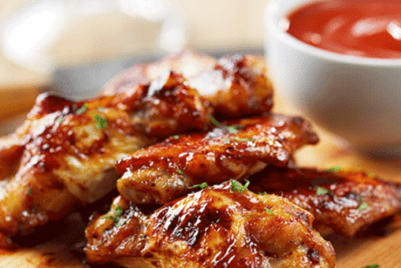

<!DOCTYPE html>
<html lang="en">
<head>
    <meta charset="UTF-8">
    <meta http-equiv="X-UA-Compatible" content="IE=edge">
    <meta name="viewport" content="width=device-width, initial-scale=1.0">
    <title>Recipe For Crispy Chicken Wings</title>
</head>
<body>
    
</body>
</html>

<html>
<body>
<head>
    <title>Recipe For Crispy Chicken Wings</title>
</head>

<center><h1><u>"Crispy Chicken Wings"</u></h1></center>

<center></center>

<h2><u>Ingrediants:</u></h2>

    <ul>
        <li>500 gm chicken wings</li>
        <li>4 cloves minced garlic</li>
        <li>3 tablespoon sugar</li>
        <li>1 handful coriander leaves</li>
        <li>2 cup refined oil</li>
        <li>50 ml fish sauce</li>
        <li>2 green chilli</li>
        <li>2 red chilli</li>
        <li>1/2 cup corn flour</li>
        <li>salt as required</li>
        <li><b>For Marination</b>
         <ul>   
        <li>2 cloves minced garlic</li>
        <li>Two 1/2 teaspoon fish sauce</li>
        <li>1/2 teaspoon black pepper</li></ul>
        </li>
        </ul>

 <h2><u>Method:</u></h2>
 <ol>
<li><b>Step 1 Marinate the chicken wings:</b>
 <ol>
 <li>Take a small bowl and mix together the marination ingredients and 1 tea spoon salt to prepare the marinade for chicken pieces.</li>
<li>Pour this marinade over the chicken and make sure each piece is nicely coated in the marination.</li>
<li>Put this bowl in the refrigerator for about an hour and let the chicken pieces marinate.</li></ol>
</li>
</ol>

<ol>
<li><b>Step 2 Coat chicken wings in corn flour and deep fry:</b>
<ol>
<li>Put a large pan over medium flame and heat oil in it.</li>
<li>Meanwhile take out the bowl of chicken and dip each marinated chicken piece in corn flour.</li>
<li>When the oil is hot enough add this chicken piece in the pan for frying.</li>
<li>Deep fry all these chicken pieces until golden brown in colour.</li>
<li>Once done, add these pieces on a kitchen towel to absorb all the oil.</li></ol> 
</li>
</ol>

<ol>
<li><b>Step 3 Make fish sauce mixture for gravy:</b>
<ol>
<li>Next, take a small bowl and mix together the remaining fish sauce, minced garlic cloves, sugar and 2 tablespoons of water.</li></ol>
</li>
</ol>

<ol>
<li><b>Step 4 Toss the chicken wings in gravy:</b>
<ol>
<li>Now, put a saucepan over medium flame and add this mixture in it.</li>
<li>Cook for about 3 to 4 minutes and then add 1 tsp salt and finely chopped red chillies in it.</li> 
<li>You can adjust the quantity of spices as per your taste.</li>
<li>Stir and cook for a minute and then add the fried chicken wings.</li>
<li>Toss well until this gravy is well coated on the fried chicken wings.</li>
<li>Finally, garnish with finely chopped coriander leaves and green chillies.</li></ol>
</li>
</ol>

<h1><center>"Crispy Chicken Wings Is Ready Serve Hot"</center></h1>

</body>
</html>
